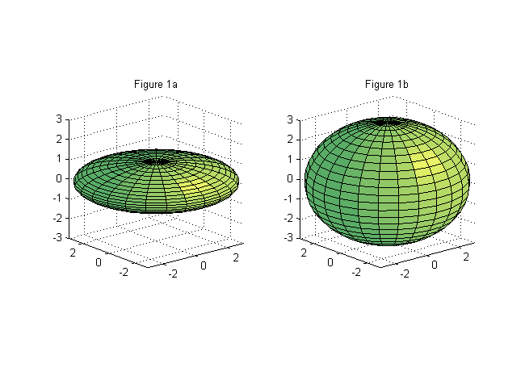

Contents
%%DEVRIES % Example of calculations of thermal conductivity based on examples by D.A. % DE VRIES, 1963 in Physics of Plant Environment by W.R. VAN WIJK, 1963. % Chapter 7. %
Assumptions:
- Granules have ellipsoidal shape;
- Granules are so far apart that they do not interfere with each other, meaning that the temperature in and around of each granule is not affected by neighboring granules. This assumption does not hold very well in soils, and correction factors need to be applied under some circumstances.
OBLATE SPHEROID: an ellipsoid in which axes a=b>c. ga, gb, and gc depend on the ratios among a,b,and c, meaning that the shape factors (also known as depolarisation factor) ga, gb, and gc are tightly related to the shape of the ellipsoid and not the its size. The following figure demonstrates the flexibility of considering the soil particles as oblate spheroids. Figure 1a shows the case for a clay-like soil particle, in which only two dimensions are significant. In contrast, Fig. 1b shows the representation of a sand particle, which has all three dimensions in similar proportions. This model results in a convenient and useful simplification to account for particle arrangement and area of contact in order to estimate the thermal conductivity of the soil.

NOTE: Variables originally expressed in calories were converted in Joules (J) by using the factor 0.004184 J/mcal.
QUARTZ SAND
This is a simple case in which only two subtances are present. An alternative to this problem is the case of dry soil in which only granular material and air are present. Both of this examples are presented.
SATURATED SAND
quartz = 0.89; % volume fraction of quartz in sand. feldspar = 0.11; % volume fraction of feldspar (and other solid particles) in sand. rho_p = 2.64; % Particle density [g cm-3] Vs = 0.573; % Volume fraction of solids. porosity = 1-Vs; % Soil total porosity; theta_v = porosity; % In this case soil water content is equal to total porosity. x1 = quartz*Vs; % Volume fraction of quartz. x2 = feldspar*Vs; % Volume fraction of feldspar (and other solid particles). lambda_q = [20.4 19.0 17.8 16.9]*0.004184*100; % Thermal conductivity (lambda) values [W/m/K] for quartz at 20, 40, 60, and 75 °C. lambda_f = 7.0*0.004184*100; % For other minerals, such as feldspar, values of lambda are approximately 7.0 mcal cm-1 sec-1 °C-1. lambda_w = 1.42*0.004184*100; % Thermal conductivity [W/m/K] of water at 20 °C. Howver, at 10 °C, water has lambda equal to 1.37 mcal cm-1 s-1 °C-1. ga = 0.144; % shape factor for the solid particles, this corresponds to a ratio of ~4 between the axes of an oblate spheroid. gb = ga; % According to the assumption that we are working with an oblate ellipsoid. gc = 1-ga-gb; % Since all factors must add to 1. % Calculate k % k is the ratio of the average temperature gradient in the granules and % the corresponding quantity in the medium (de Vries, 1963. p 214). k1 = 1/3*(2/(1+(lambda_q(1)/lambda_w-1)*ga)+1/(1+(lambda_q(1)/lambda_w-1)*gc)); k2 = 1/3*(2/(1+(lambda_f/lambda_w-1)*ga)+1/(1+(lambda_f/lambda_w-1)*gc)); % Calculate thermal conductivity of saturated soil. lambda_satsoil = (theta_v*lambda_w + k1*x1*lambda_q(1) + k2*x2*lambda_f)/(theta_v + k1*x1 + k2*x2); % Created by AP and TEO. December ?11, ?2013.